Гонщик Red Bull Racing Макс Ферстаппен виграв гонку Гран Прі Нідерландів, яка виявилась насиченою несподіваними та метушливими подіями.
Перед початком гонки було багато розмов про те, що гонщики Ferrari мають гарні шанси вчинити тиск на Макс Ферстаппена, але завадити Скудерії, як завжди, міг лише стратегічний департамент.
Звісно, перед домашніми трибунами нідерландець теж не міг програти (в жодному із сенсів), а допомогти гонщику Red Bull Racing міг додатковий комплект Soft, який Макс зберіг під час кваліфікації.
Цікаво, що чотири гонщика в топ-10 вирішили стартувати на Medium (Хемільтон, Рассел. Норріс та Шумахер). Інші в «десятці» почали гонку на Soft.
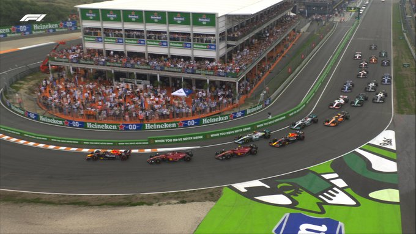На старті Ферстаппен різко змістився перед Леклером, явно врахувавши досвід гонок підтримки (Ф2 та Ф3), де лідер втратив позицію до першого повороту.
Макс же втримав лідерство й повів за собою дві Ferrari, які за деякими оцінками мали вищу гоночну швидкість на Зандворті.
Найбільше місць на перших колах відіграв Окон й топ-10 на 5 колі виглядала так: Ферстаппен, Леклер, Сайнс, Хемільтон, Перес, Расселл, Норріс, Стролл, Окон та Шумахер.
Помітною помилкою був лише виліт Магнуссена, який їхав в хвості пелотона, а після проїзду зонами безпеки, взагалі став останнім.
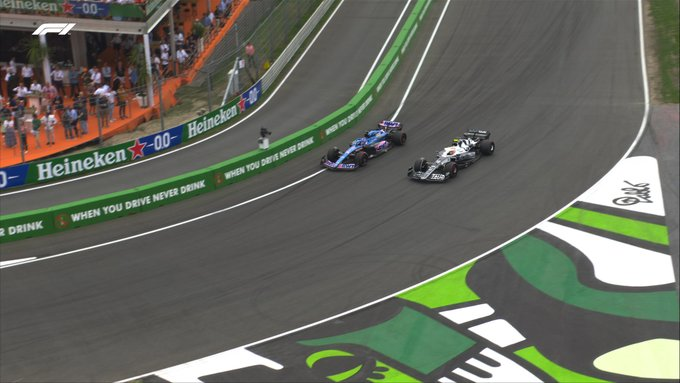До 12-го кола на трасі майже нічого не відбувалось, лише Алонсо обійшов два боліда AlphaTauri, але деякі команди вирішили почати перші піт-стопи.
Феттель, Ріккардо та Чжоу перейшли на Medium, а Алонсо взагалі на Hard.
У топ-10 зупинки почали Шумахер та Цунода на 14-му колі, а Сайнс заїхав у бокси на 15-му колі, де провів аж 12 секунд через те, що забули принести заднє ліве колесо (до речі, на трасі в цей вікенд перебував Едді Ірвайн, який багато що може розказати про аналогічний інцидент).
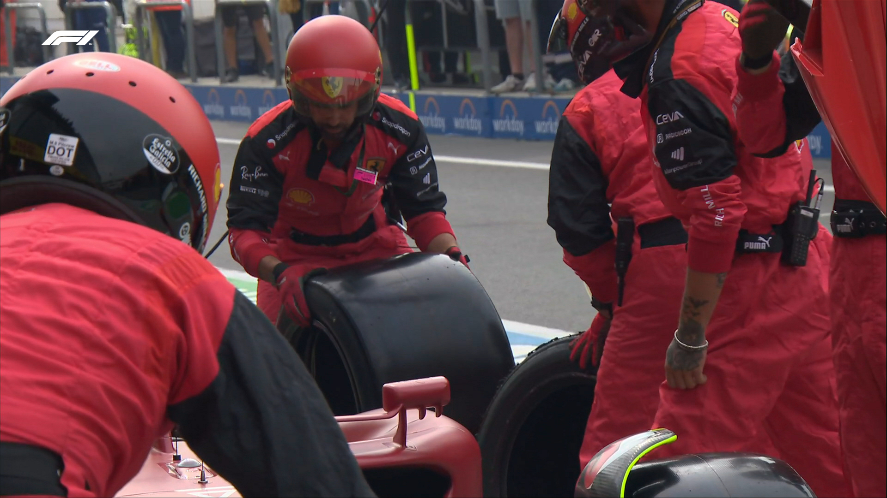 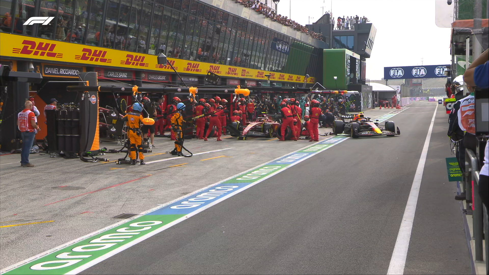Більш того, в цій «метушні», як назвав цю помилку Маттіа Бінотто в інтерв’ю під час гонки, механік Скудерії задалеко відкинув гайковерт від боксів. Й Перес, який встиг зробити піт-стоп, наїхав на відкинутий гайковерт й обійшов Сайнса в боксах. Проте Ferrari ще може чекати штраф за таке порушення.
На 18-му колі Леклер попросився в бокси сам й Ferrari цього разу провела все правильно, перевівши Шарля на Medium.
Red Bull відреагували через коло й без проблем провели заміну шин у Ферстаппена, теж на Medium.
Таким чином, Хемільтон та Расселл, які й стартували на Medium, вийшли в лідери гонки, а Ферстаппен програвав лідеру 9 секунд.
До 24-го кола Ферстаппен скоротив відставання від Хемільтона до 5 секунд, але Льюїс начебто не збирався робити зупинку.
Топ-10 на 25 колі виглядала так: Хемільтон, Расселл, Ферстаппен, Леклер, Перес, Сайнс, Норріс, Стролл, Алонсо та Окон.
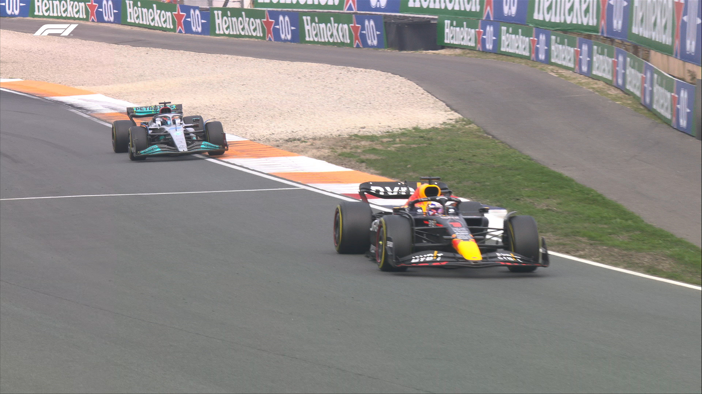На 28-му колі Ферстаппен обійшов Расселла, але Хемільтон не дав себе обігнати, адже заїхав у бокси на 29-му. Льюїс виїхав на Hard й виїхав 5-м із комфортною перевагою над Сайнсом.
Вочевидь, Mercedes збирався їхати з одним піт-стопом, але й при цьому Хемільтон на «харді» їхав коло за 1.15.5., в той час як Ферстаппен проїжджав коло за 1.16.2. Темп Леклера та Переса був ще гіршим.
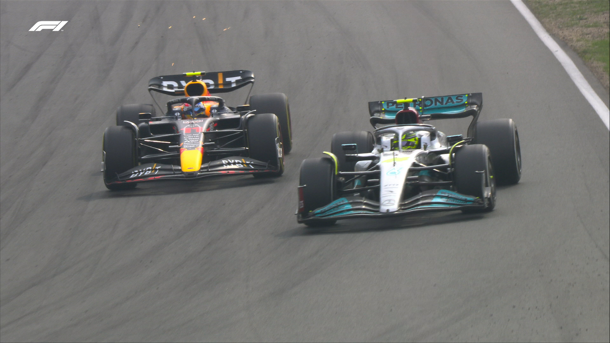Це дало можливість Льюїсу швидко наздогнати Переса й пройти його на 37-му колі після невеликого опору мексиканця. За два кола аналогічний маневр на стартовій прямій виконав й Расселл.
Таким чином, на 40 колі топ-10 виглядала так: Ферстаппен, Леклер (+10с), Хемільтон (+5с), Расселл (+5с), Перес (+2с), Сайнс (+13с), Норріс (+4с), Алонсо (+3с), Окон (+4с), Цунода (+11с).
На 41-му колі Red Bull вирішила перевести Переса на Hard й перевірити роботу цього компаунду в гоночних умовах. Серхіо виїхав 7-м за Норрісом.
Вочевидь, Hard виявився швидшим й Перес їхав коло за 1.14.9 й швидко обігнав Норріса (на 44-му колі).
В цей же момент Ferrari вирішила перевести Сайнса на Hard й цього разу піт-стоп пройшов нормально. Хоча Сайнс виїхав 9-м.
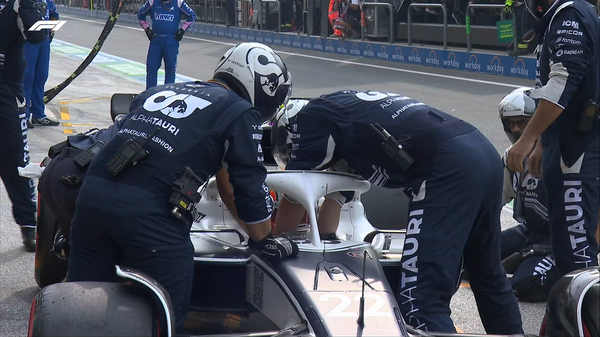Проте більшу метушню викликав Цунода, який зупинився на трасі з незрозумілих причин. Японець викликав жовтні прапори, потім доїхав до боксів, потім знову виїхав й зупинився на трасі, що й стало причиною віртуальної машини безпеки.
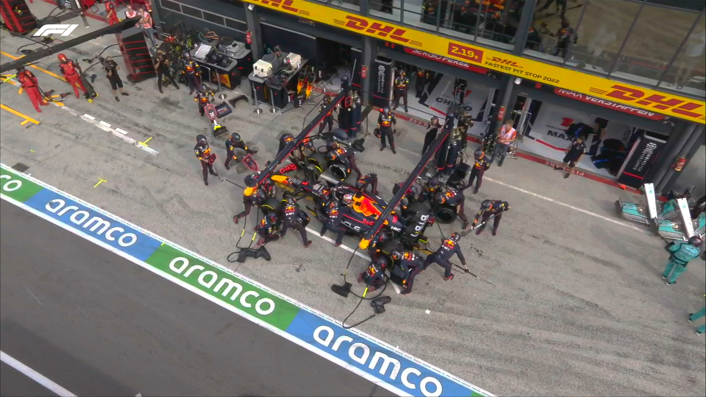Команди почали масово робити піт-стопи: Ферстаппен навіть зробив два (спочатку перейшов на Medium, потім на Hard), а пілоти Mercedes навпаки перейшли на Medium.
На 50-му колі режим VSC скасували й Ферстаппен опинився в 18 секундах попереду Хемільтона та Расселла. Леклер програвав лідеру гонки 24 секунди.
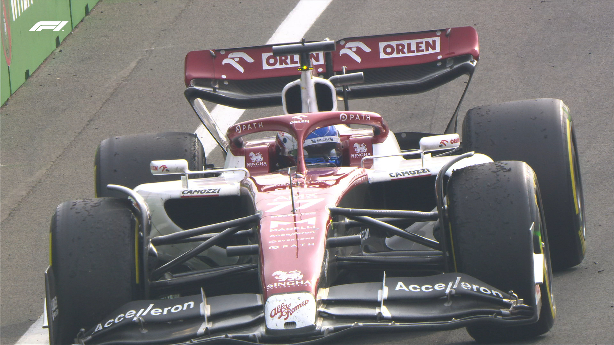На 55-му колі на стартовій прямій зупинився Боттас, чим викликав спочатку жовті прапори, а потім й машину безпеки. В цей момент, Сайнс не помітив жовті прапори й обігнав Алонсо, за що пізніше отримав 5 секунд до результату.
Проте в Red Bull Racing вирішили закликати Ферстаппена за Soft й віддали лідерську позицію Хемільтону на Medium. Тобто на рестарті Макс був знову позаду Хемільтона й на свіжіших й м’якіших шинах (нічого не нагадує?)
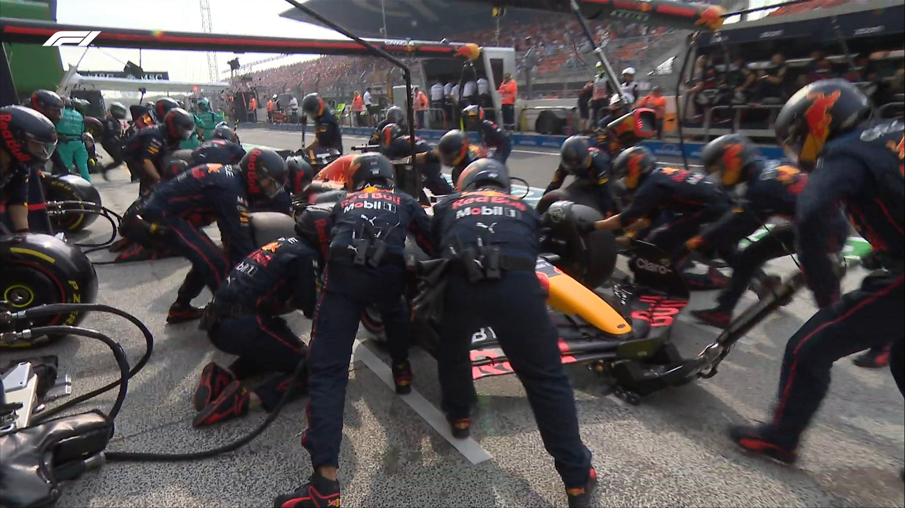Аналогічно на Soft перейшли всі гонщики. Фактично на Medium залишились лише Хемільтон та Перес.
До рестарту топ-10 виглядала так: Хемільтон, Ферстаппен, Расселл, Леклер, Перес, Сайнс, Алонсо, Норріс, Окон та Стролл.
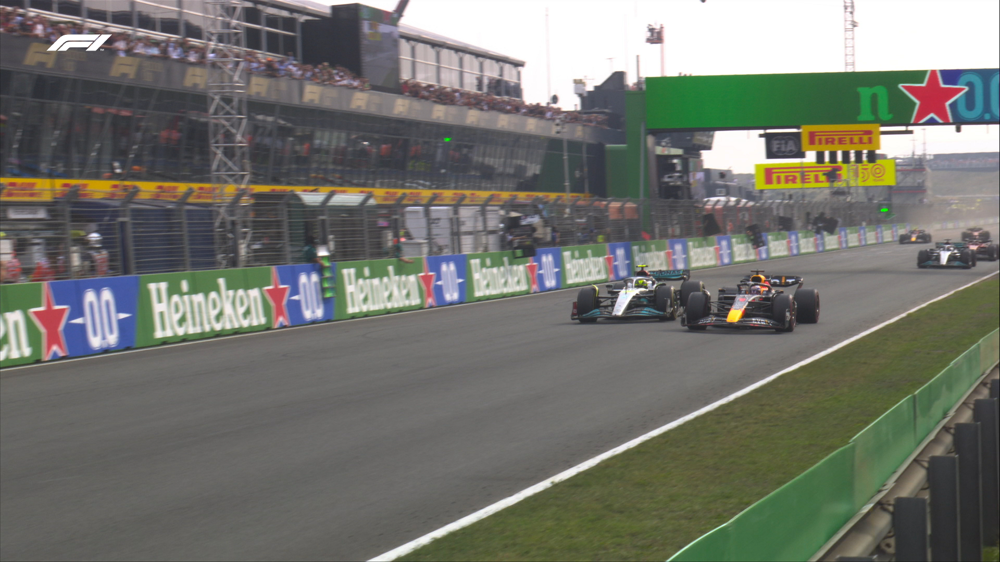На 61-му колі гонка фактично почалась наново й Макс вже на стартовій прямій без проблем обійшов Льюїса, а Карлос обігнав Переса в першому повороті.
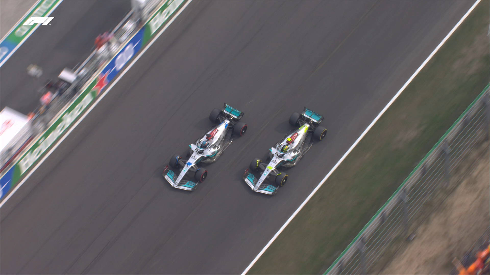На «медіумі» Хемільтон почав швидко втрачати темп й поступився спочатку Расселлу, а за два кола Леклеру.
Ферстаппен же впевнено довів гонку до десятої перемоги в сезоні й привіз Расселлу на фініші більше п’яти секунд. Леклер доїхав до третього місця на подіумі.
Хемільтон висказав команді по радіо багато невдоволення й фінішував 4-м, а 5-м приїхав Перес, який боровся із Сайнсом на останніх колах.
Сайнс через 5-секундний штраф опинився на 8-му місці, пропустивши вперед Алонсо та Норріса. Окон та Стролл замкнули призову десятку.
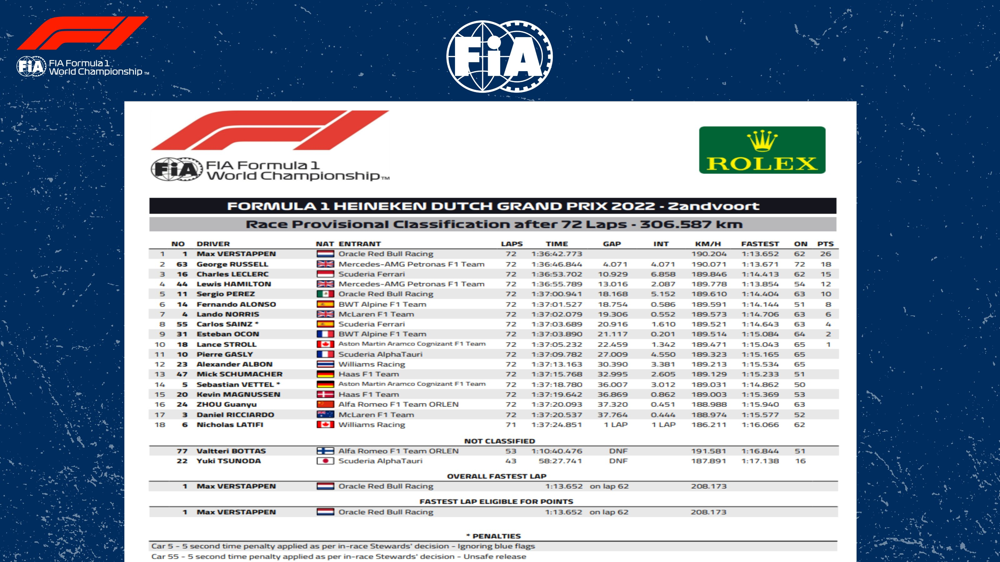Зі своєю 30-ю перемогою в кар’єрі Ферстаппен впевнено йде достроково до здобуття другого титулу Ф1 й наступний крок до нього може зробити вже на домашній трасі для Ferrari. Вже наступного вікенду Ф1 проведе Гран Прі Італії.
Слідкуйте за останніми новинами на наших каналах у Facebook, Twitter та Telegram.